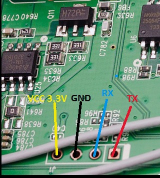
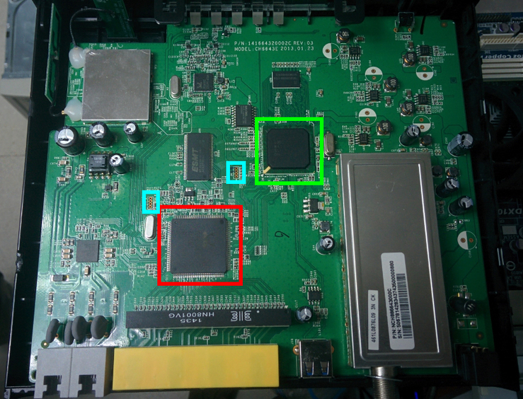

Embedded device hacking is the exploiting of vulnerabilities in embedded software (or hardware) to gain control of the device.
Básicamente… tenemos un hardware que sabemos que ejecuta un sistema operativo con la finalidad de hacer algo mediante un software y queremos hacernos con el control del hardware y/o software.
Ejemplo: Conseguir super-administración del router.
Principalmente tenemos dos caminos:
JavaScript del clienteEste no es el camino que hemos elegido hoy.
Hay que identificar chips y ver que podemos hacer con ellos.

¿Y ahora qué? Pues esta es lista de prioridades:
Generalmente si en 1 o 2 consigues una shell no necesitas hacer 3 y 4 ya que podrás acceder desde ella.

¿Dudas, ruegos o preguntas?
¡Muchas gracias a todos!